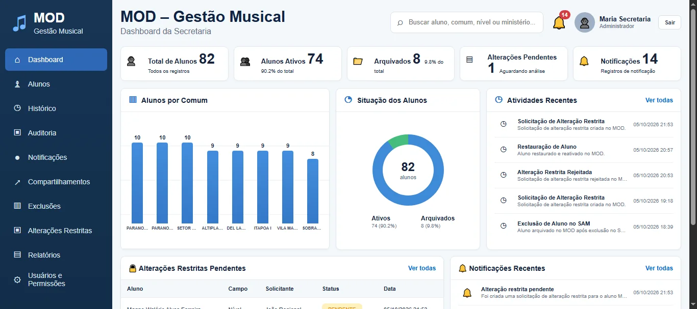
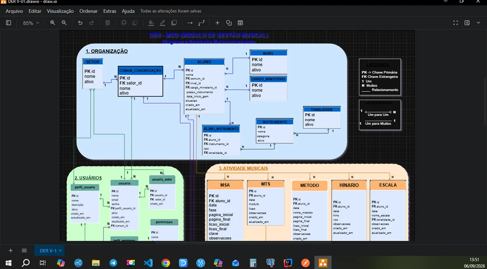
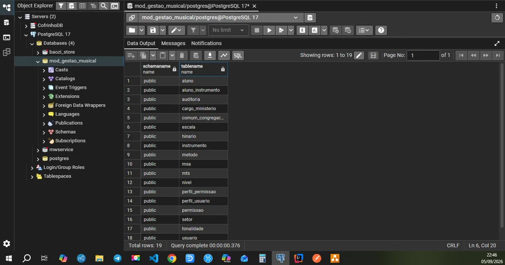
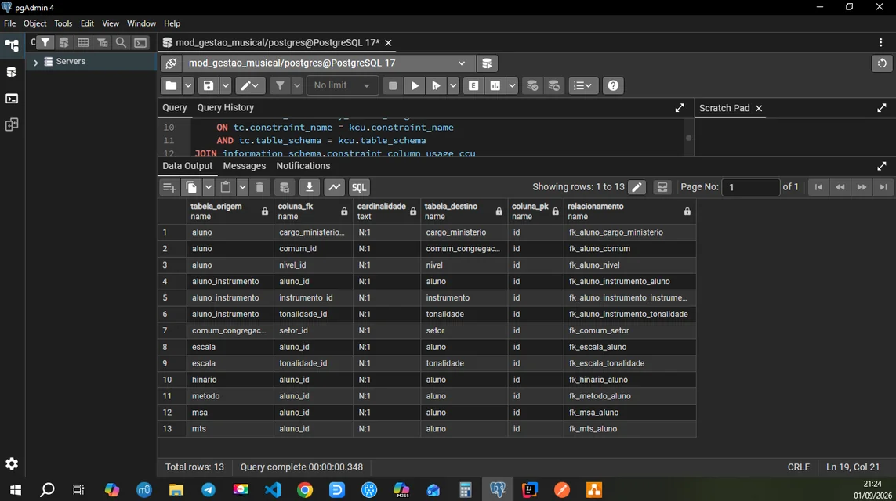
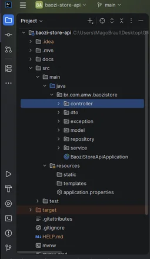
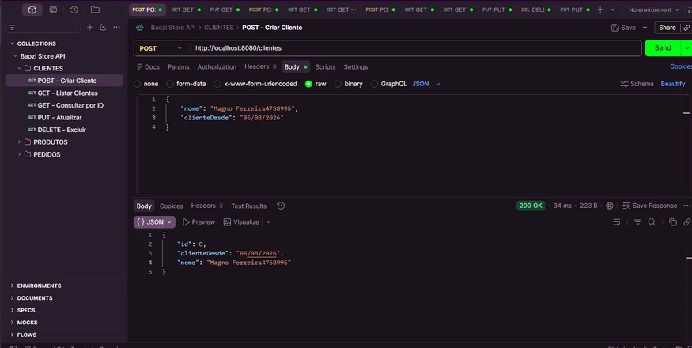
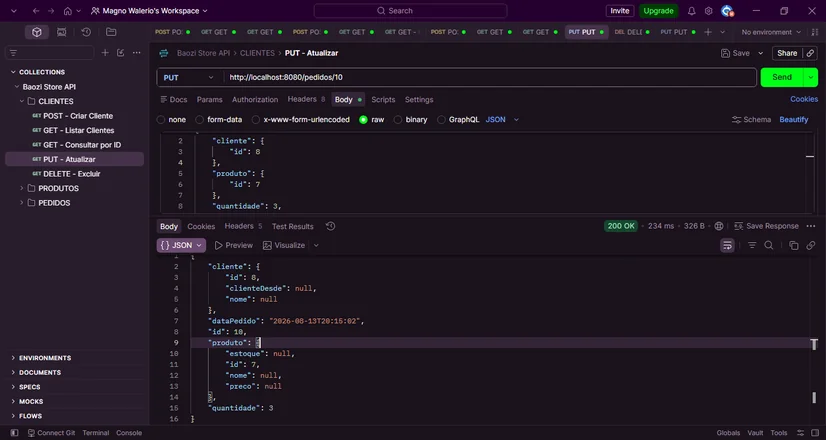
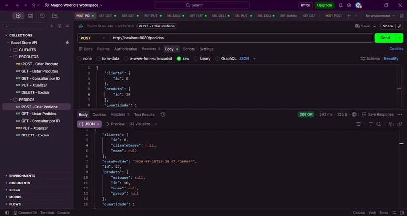
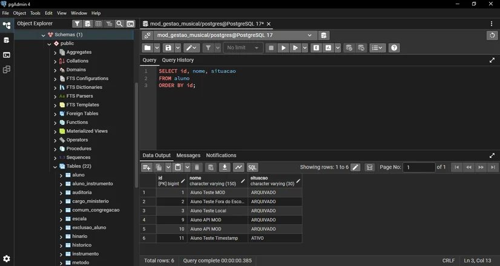
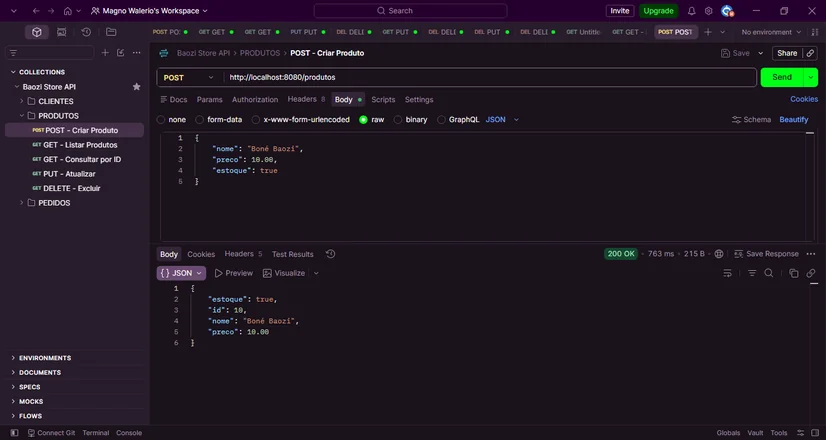

Back-end
- Java 21
- Classes e Objetos
- Encapsulamento
- Herança e Polimorfismo
- Interfaces
- Spring Boot
- APIs REST — CRUD e HTTP
- Spring Security — Autenticação e Autorização
- Spring Data JPA / Hibernate
Java 21 · Spring Boot · PostgreSQL · APIs REST
Baixar CurrículoSou estudante de Análise e Desenvolvimento de Sistemas na UNINTER, com foco em desenvolvimento Back-end Java, utilizando Java 21, Spring Boot, APIs REST e PostgreSQL. Busco minha primeira oportunidade profissional como Desenvolvedor Back-end Java Júnior.
Minha trajetória reúne experiências no transporte coletivo e na música, áreas que fortaleceram minha disciplina, responsabilidade, organização e capacidade de trabalhar sob pressão. Sou violoncelista, com formação na Escola de Música de Brasília (EMB), e atuo como Secretário Musical do Setor Paranoá.
Na tecnologia, desenvolvo projetos para transformar conhecimentos acadêmicos em soluções práticas. Entre eles, destaco o MOD – Gestão Musical, sistema com back-end Java e front-end Angular, desenvolvido para apoiar a gestão e o acompanhamento de atividades musicais.
Estou construindo minha transição de carreira com dedicação, aprendizado contínuo e interesse em contribuir para equipes de desenvolvimento, aplicando meus conhecimentos e evoluindo profissionalmente.
UNINTER
Análise e Desenvolvimento de Sistemas
Em andamento - previsão de conclusão: 1º semestre de 2027.
Java 21 e Spring Boot
Desenvolvimento de APIs REST,
orientação a objetos e
regras de negócio.
PostgreSQL
SQL, modelagem de dados e
persistência com JPA/Hibernate.
EMB — Brasília
Técnico em Violoncelo pela
Escola de Música de Brasília (2023).
Java 21 | Spring Boot | PostgreSQL | Angular
Sistema de gestão musical com APIs REST,
autenticação, controle de permissões,
auditoria e acompanhamento de alunos.
Além da graduação em Análise e Desenvolvimento de Sistemas, complemento meus estudos com cursos de Spring Boot, SQL, Angular e TypeScript, conforme minha disponibilidade e meus objetivos de desenvolvimento profissional.
Programação Orientada a Objetos
Nélio Alves — Udemy
Em andamento
Área Tech Brasil
Em andamento
Leandro Costa — Udemy
Em andamento
Loiane Groner
Em andamento
Desenvolvida na rotina do transporte coletivo, que exige atenção, pontualidade e compromisso com a segurança.
Aplicada na Secretaria Musical do Setor Paranoá e no planejamento de atividades e projetos.
Presente na conciliação entre graduação, estudos de programação e desenvolvimento de projetos práticos.
Fortalecida pela vivência musical, pelo ensino e pela interação com diferentes pessoas e responsabilidades.
Tecnologias que utilizo em projetos acadêmicos e pessoais, além de ferramentas que fazem parte da minha formação como desenvolvedor Back-end Java.
Experiência prática: tecnologias utilizadas em projetos acadêmicos e pessoais, especialmente no MOD – Gestão Musical e no desenvolvimento deste portfólio.
Em desenvolvimento: conhecimentos que continuo aprofundando por meio da graduação, cursos e exercícios.






Sistema de gestão e acompanhamento musical desenvolvido com Java 21, Spring Boot, PostgreSQL e Angular.
Autenticação, controle de permissões, auditoria, regras de negócio e acompanhamento de alunos.
A Secretaria Musical do Setor Paranoá necessita organizar informações de alunos, acompanhar o progresso musical e manter registros das atividades realizadas.
Desenvolvimento de um sistema web com Back-end Java e Front-end Angular, integrado a um banco de dados PostgreSQL.
Java 21, Spring Boot, Spring Security, Spring Data JPA, PostgreSQL, Angular e TypeScript.
O MOD utiliza uma arquitetura em camadas, separando a interface web, as regras de negócio e a persistência dos dados.
Implementação de autenticação com Spring Security e sessões HTTP, incluindo login, logout, consulta da sessão autenticada e controle de sessão ativa por usuário.
Controle de acesso baseado em perfis e permissões, restringindo operações conforme as responsabilidades de cada usuário no sistema.
As permissões são verificadas para permitir ou impedir operações específicas, como edição de informações, consulta de auditoria e aprovação de alterações restritas.
Registro de operações relevantes para permitir o acompanhamento das alterações realizadas no sistema e a identificação de seus responsáveis.
Implementação de regras específicas da gestão musical, considerando responsabilidades, autorizações e preservação do histórico.
Aplicação de gerenciamento financeiro desenvolvida com Java 21, Spring Boot e PostgreSQL.
Java 21 • Spring Boot • PostgreSQL • API REST
GitHub — Cofrinho Pro







API REST para gerenciamento de clientes, produtos e pedidos, desenvolvida com Java, Spring Boot e Spring Data JPA.
Java • Spring Boot • Spring Data JPA • API REST
GitHub — Baozi Store APIApresentações com repertório clássico e moderno.
Projetos de desenvolvimento de software com foco em Java, APIs REST e aplicações web.